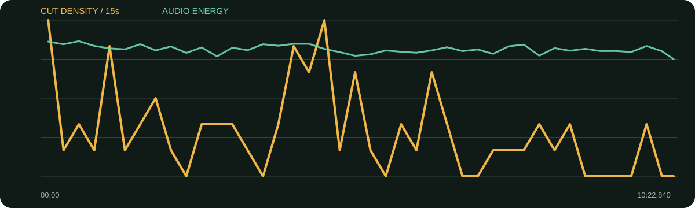

景别 / 机位系统
- 主画面以同一布景下的中景与近景交替为主
- 切镜多落在一句话结束、情绪转折或手势变化后
- 长句不急着切，允许停顿、呼吸和目光停留
- 少量外部画面承担人物/作品证据，不把B-roll当填空
这条片不靠高频花字制造高级感，而是用稳定轴线、两档景别和完整语句保住人物的真诚；少量档案/B-roll只在话题需要证据时出现。
口径说明：候选镜头由场景检测生成，闪光、人物快速动作、数字推拉和图形变化都可能误触发；逐秒重点由真实原片、字幕语义和全片总览人工选择。字幕来自本地中文语音识别，人名、品牌名与行业词可能有误，不把自动转写当逐字稿。
| 时间 | 章节 | 内容推进 | 剪辑任务 |
|---|---|---|---|
| 00:00–00:58 | 冷开场：从自我怀疑到“你很好” | 先给个人经历，再把私人经验提升为女孩之间的互助命题。 | 近景承情绪，中景给呼吸；姓名信息只短暂出现。 |
| 00:58–03:03 | 私人物件与真实自我 | 从童年毯子讲到不喜欢自己、隐藏痛苦与不敢表达。 | 保留叙述完整性，不用密集包装打断脆弱感。 |
| 03:03–06:00 | 人格面具、角色与女性经验 | 从社交面具进入角色、母女关系与女性角色变化。 | 在抽象观点与具体作品之间用少量证据画面换气。 |
| 06:00–08:00 | 女孩互助与日常规训 | 前辈的提醒、“你已经足够好”与卫生巾黑袋等生活经验。 | 语义转折时换景别，让概念段仍有人物温度。 |
| 08:00–10:23 | 自卑、野心与平凡生活 | 由表演自信进入不再羞于野心，最后落到日复一日的耐心。 | 结尾主动放慢，让价值判断落稳。 |
B-roll稀少而有名词对应：作品/人物/情境出现时才切入，随后回到脸部继续承接情绪。
可核验到完整综合音轨与音量起伏，但当前未做人声/配乐分轨，也未进行人工听辨；因此报告只标注综合音量、停顿和剪辑留白，不猜曲名、乐器或具体音乐风格。
每张长图从左到右为真实的连续秒点。重点不是记住截图，而是看清一组画面怎样“进入—完成任务—退出”。
画面事实近景/中景在完整语句中谨慎切换，先建立可信度。
怎么复现不要先铺履历，先选人物最脆弱且可共情的一句。
画面事实字幕持续但不做夸张大字，力量来自语气与前文铺垫。
怎么复现让核心句前留半拍，减少同期视觉干扰。
画面事实抽象访谈转入可见的作品或情境，画面承担证明。
怎么复现只在台词出现具体名词时插证据，并在情绪句前回脸。
画面事实从长时间谈话头切到另一人物画面，重置视觉疲劳。
怎么复现长访谈每2—4分钟安排一次真正有信息的视觉换气。
画面事实内容由问题进入成长结论，景别变化帮助观众感知方向改变。
怎么复现先剪出语义转轴，再决定是否需要花字；这类转折不一定要特效。
画面事实镜头延长、信息密度下降，给最后观点停留时间。
怎么复现最后一句不要立刻切黑，至少留出一次呼吸或目光余韵。

| 观察项 | 15秒窗口 |
|---|---|
| 视觉最密 | 00:00–00:15（24.0 候选切镜/分）；04:30–04:45（24.0 候选切镜/分）；01:00–01:15（20.0 候选切镜/分） |
| 视觉最缓 | 02:15–02:30（0.0 候选切镜/分）；03:30–03:45（0.0 候选切镜/分）；05:30–05:45（0.0 候选切镜/分） |
| 综合音轨最强 | 00:30–00:45（-16.0 dBFS）；00:00–00:15（-16.2 dBFS）；04:15–04:30（-16.8 dBFS） |
“视觉最密/最缓”基于自动候选切镜；“综合音轨最强”包含人声、环境声、音乐和音效，不能单独当作配乐音量。平均综合音轨为 -18.33 dBFS，最高15秒窗口 -16.05 dBFS，最低15秒窗口 -21.21 dBFS。
| # | 入点 | 出点 | 时长 | 代表帧秒点 | 证据 |
|---|---|---|---|---|---|
| 1 | 00:00.000 | 00:03.360 | 3.36s | 0.750000s | 自动候选 |
| 2 | 00:03.360 | 00:06.400 | 3.04s | 4.110000s | 自动候选 |
| 3 | 00:06.400 | 00:07.280 | 0.88s | 6.796000s | 自动候选 |
| 4 | 00:07.280 | 00:08.440 | 1.16s | 7.802000s | 自动候选 |
| 5 | 00:08.440 | 00:10.800 | 2.36s | 9.190000s | 自动候选 |
| 6 | 00:10.800 | 00:13.960 | 3.16s | 11.550000s | 自动候选 |
| 7 | 00:13.960 | 00:17.240 | 3.28s | 14.710000s | 自动候选 |
| 8 | 00:17.240 | 00:27.920 | 10.68s | 17.990000s | 自动候选 |
| 9 | 00:27.920 | 00:32.440 | 4.52s | 28.670000s | 自动候选 |
| 10 | 00:32.440 | 00:35.120 | 2.68s | 33.190000s | 自动候选 |
| 11 | 00:35.120 | 00:39.320 | 4.20s | 35.870000s | 自动候选 |
| 12 | 00:39.320 | 00:51.960 | 12.64s | 40.070000s | 自动候选 |
| 13 | 00:51.960 | 00:55.720 | 3.76s | 52.710000s | 自动候选 |
| 14 | 00:55.720 | 01:01.880 | 6.16s | 56.470000s | 自动候选 |
| 15 | 01:01.880 | 01:02.720 | 0.84s | 62.258000s | 自动候选 |
| 16 | 01:02.720 | 01:03.800 | 1.08s | 63.206000s | 自动候选 |
| 17 | 01:03.800 | 01:04.680 | 0.88s | 64.196000s | 自动候选 |
| 18 | 01:04.680 | 01:06.080 | 1.40s | 65.310000s | 自动候选 |
| 19 | 01:06.080 | 01:13.720 | 7.64s | 66.830000s | 自动候选 |
| 20 | 01:13.720 | 01:16.160 | 2.44s | 74.470000s | 自动候选 |
| 21 | 01:16.160 | 01:25.560 | 9.40s | 76.910000s | 自动候选 |
| 22 | 01:25.560 | 01:30.480 | 4.92s | 86.310000s | 自动候选 |
| 23 | 01:30.480 | 01:33.440 | 2.96s | 91.230000s | 自动候选 |
| 24 | 01:33.440 | 01:41.440 | 8.00s | 94.190000s | 自动候选 |
| 25 | 01:41.440 | 01:45.600 | 4.16s | 102.190000s | 自动候选 |
| 26 | 01:45.600 | 01:49.080 | 3.48s | 106.350000s | 自动候选 |
| 27 | 01:49.080 | 01:55.080 | 6.00s | 109.830000s | 自动候选 |
| 28 | 01:55.080 | 01:58.000 | 2.92s | 115.830000s | 自动候选 |
| 29 | 01:58.000 | 02:02.360 | 4.36s | 118.750000s | 自动候选 |
| 30 | 02:02.360 | 02:12.520 | 10.16s | 123.110000s | 自动候选 |
| 31 | 02:12.520 | 02:25.720 | 13.20s | 133.270000s | 自动候选 |
| 32 | 02:25.720 | 02:31.240 | 5.52s | 146.470000s | 自动候选 |
| 33 | 02:31.240 | 02:39.240 | 8.00s | 151.990000s | 自动候选 |
| 34 | 02:39.240 | 02:43.280 | 4.04s | 159.990000s | 自动候选 |
| 35 | 02:43.280 | 02:46.640 | 3.36s | 164.030000s | 自动候选 |
| 36 | 02:46.640 | 02:54.320 | 7.68s | 167.390000s | 自动候选 |
| 37 | 02:54.320 | 02:57.360 | 3.04s | 175.070000s | 自动候选 |
| 38 | 02:57.360 | 03:00.880 | 3.52s | 178.110000s | 自动候选 |
| 39 | 03:00.880 | 03:05.840 | 4.96s | 181.630000s | 自动候选 |
| 40 | 03:05.840 | 03:13.320 | 7.48s | 186.590000s | 自动候选 |
| 41 | 03:13.320 | 03:18.000 | 4.68s | 194.070000s | 自动候选 |
| 42 | 03:18.000 | 03:21.160 | 3.16s | 198.750000s | 自动候选 |
| 43 | 03:21.160 | 03:44.880 | 23.72s | 201.910000s | 自动候选 |
| 44 | 03:44.880 | 03:53.920 | 9.04s | 225.630000s | 自动候选 |
| 45 | 03:53.920 | 03:56.120 | 2.20s | 234.670000s | 自动候选 |
| 46 | 03:56.120 | 03:58.280 | 2.16s | 236.870000s | 自动候选 |
| 47 | 03:58.280 | 04:00.840 | 2.56s | 239.030000s | 自动候选 |
| 48 | 04:00.840 | 04:03.640 | 2.80s | 241.590000s | 自动候选 |
| 49 | 04:03.640 | 04:06.080 | 2.44s | 244.390000s | 自动候选 |
| 50 | 04:06.080 | 04:09.760 | 3.68s | 246.830000s | 自动候选 |
| 51 | 04:09.760 | 04:11.960 | 2.20s | 250.510000s | 自动候选 |
| 52 | 04:11.960 | 04:14.560 | 2.60s | 252.710000s | 自动候选 |
| 53 | 04:14.560 | 04:24.000 | 9.44s | 255.310000s | 自动候选 |
| 54 | 04:24.000 | 04:25.640 | 1.64s | 264.738000s | 自动候选 |
| 55 | 04:25.640 | 04:26.440 | 0.80s | 266.000000s | 自动候选 |
| 56 | 04:26.440 | 04:28.520 | 2.08s | 267.190000s | 自动候选 |
| 57 | 04:28.520 | 04:29.000 | 0.48s | 268.736000s | 自动候选 |
| 58 | 04:29.000 | 04:32.000 | 3.00s | 269.750000s | 自动候选 |
| 59 | 04:32.000 | 04:32.360 | 0.36s | 272.162000s | 自动候选 |
| 60 | 04:32.360 | 04:35.080 | 2.72s | 273.110000s | 自动候选 |
| 61 | 04:35.080 | 04:35.280 | 0.20s | 275.170000s | 自动候选 |
| 62 | 04:35.280 | 04:39.280 | 4.00s | 276.030000s | 自动候选 |
| 63 | 04:39.280 | 04:41.240 | 1.96s | 280.030000s | 自动候选 |
| 64 | 04:41.240 | 04:43.800 | 2.56s | 281.990000s | 自动候选 |
| 65 | 04:43.800 | 04:48.080 | 4.28s | 284.550000s | 自动候选 |
| 66 | 04:48.080 | 04:53.760 | 5.68s | 288.830000s | 自动候选 |
| 67 | 04:53.760 | 05:00.440 | 6.68s | 294.510000s | 自动候选 |
| 68 | 05:00.440 | 05:03.960 | 3.52s | 301.190000s | 自动候选 |
| 69 | 05:03.960 | 05:06.440 | 2.48s | 304.710000s | 自动候选 |
| 70 | 05:06.440 | 05:08.160 | 1.72s | 307.190000s | 自动候选 |
| 71 | 05:08.160 | 05:10.160 | 2.00s | 308.910000s | 自动候选 |
| 72 | 05:10.160 | 05:16.160 | 6.00s | 310.910000s | 自动候选 |
| 73 | 05:16.160 | 05:25.800 | 9.64s | 316.910000s | 自动候选 |
| 74 | 05:25.800 | 05:32.080 | 6.28s | 326.550000s | 自动候选 |
| 75 | 05:32.080 | 05:45.440 | 13.36s | 332.830000s | 自动候选 |
| 76 | 05:45.440 | 05:53.720 | 8.28s | 346.190000s | 自动候选 |
| 77 | 05:53.720 | 05:59.240 | 5.52s | 354.470000s | 自动候选 |
| 78 | 05:59.240 | 06:01.200 | 1.96s | 359.990000s | 自动候选 |
| 79 | 06:01.200 | 06:13.960 | 12.76s | 361.950000s | 自动候选 |
| 80 | 06:13.960 | 06:20.160 | 6.20s | 374.710000s | 自动候选 |
| 81 | 06:20.160 | 06:22.960 | 2.80s | 380.910000s | 自动候选 |
| 82 | 06:22.960 | 06:23.720 | 0.76s | 383.302000s | 自动候选 |
| 83 | 06:23.720 | 06:25.040 | 1.32s | 384.314000s | 自动候选 |
| 84 | 06:25.040 | 06:25.600 | 0.56s | 385.292000s | 自动候选 |
| 85 | 06:25.600 | 06:38.280 | 12.68s | 386.350000s | 自动候选 |
| 86 | 06:38.280 | 06:41.160 | 2.88s | 399.030000s | 自动候选 |
| 87 | 06:41.160 | 06:44.440 | 3.28s | 401.910000s | 自动候选 |
| 88 | 06:44.440 | 06:48.720 | 4.28s | 405.190000s | 自动候选 |
| 89 | 06:48.720 | 07:09.680 | 20.96s | 409.470000s | 自动候选 |
| 90 | 07:09.680 | 07:19.960 | 10.28s | 430.430000s | 自动候选 |
| 91 | 07:19.960 | 07:29.040 | 9.08s | 440.710000s | 自动候选 |
| 92 | 07:29.040 | 07:30.600 | 1.56s | 449.742000s | 自动候选 |
| 93 | 07:30.600 | 07:44.720 | 14.12s | 451.350000s | 自动候选 |
| 94 | 07:44.720 | 07:50.800 | 6.08s | 465.470000s | 自动候选 |
| 95 | 07:50.800 | 07:54.400 | 3.60s | 471.550000s | 自动候选 |
| 96 | 07:54.400 | 08:01.920 | 7.52s | 475.150000s | 自动候选 |
| 97 | 08:01.920 | 08:09.440 | 7.52s | 482.670000s | 自动候选 |
| 98 | 08:09.440 | 08:12.520 | 3.08s | 490.190000s | 自动候选 |
| 99 | 08:12.520 | 08:17.360 | 4.84s | 493.270000s | 自动候选 |
| 100 | 08:17.360 | 08:27.600 | 10.24s | 498.110000s | 自动候选 |
| 101 | 08:27.600 | 08:34.560 | 6.96s | 508.350000s | 自动候选 |
| 102 | 08:34.560 | 08:43.000 | 8.44s | 515.310000s | 自动候选 |
| 103 | 08:43.000 | 08:44.200 | 1.20s | 523.540000s | 自动候选 |
| 104 | 08:44.200 | 08:54.440 | 10.24s | 524.950000s | 自动候选 |
| 105 | 08:54.440 | 09:13.320 | 18.88s | 535.190000s | 自动候选 |
| 106 | 09:13.320 | 09:38.720 | 25.40s | 554.070000s | 自动候选 |
| 107 | 09:38.720 | 09:49.040 | 10.32s | 579.470000s | 自动候选 |
| 108 | 09:49.040 | 09:51.240 | 2.20s | 589.790000s | 自动候选 |
| 109 | 09:51.240 | 09:54.200 | 2.96s | 591.990000s | 自动候选 |
| 110 | 09:54.200 | 10:10.240 | 16.04s | 594.950000s | 自动候选 |
| 111 | 10:10.240 | 10:22.840 | 12.60s | 610.990000s | 自动候选 |